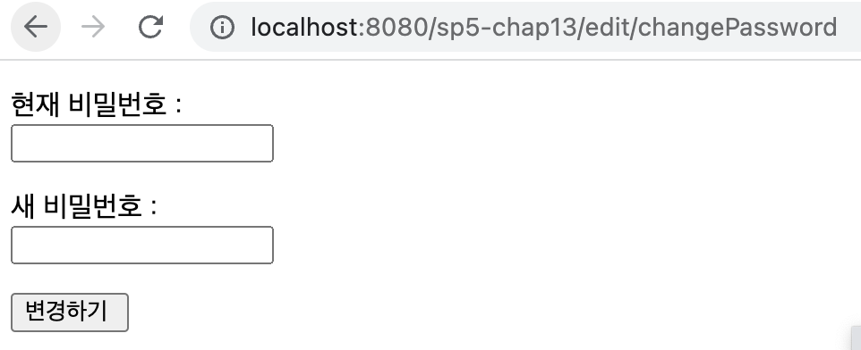
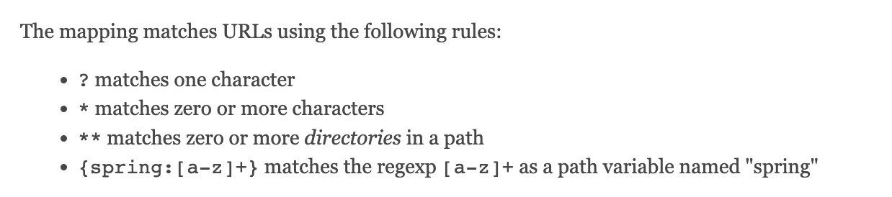
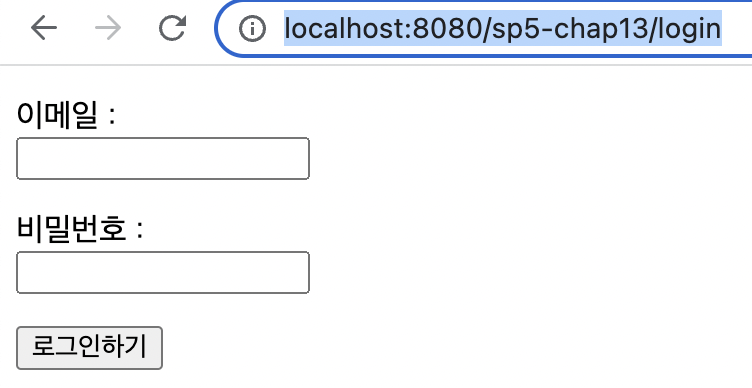

<meta charset="utf-8">
<html lang="ko">
<head>
    <link rel="stylesheet" type="text/css" href="./../style.css" />
    <title>Ch13. MVC 3 : 인터셉터</title>
</head>
<body id="tt-body-page" class="">
<div id="wrap" class="wrap-right">
    <div id="container">
        <main class="main ">
            <div class="area-main">
                <div class="area-view">
                    <div class="article-header">
                        <div class="inner-article-header">
                            <div class="box-meta">
                                <h2 class="title-article">Ch13. MVC 3 : 인터셉터</h2>
                                <div class="box-info">
                                    <p class="category">Web</p>
                                    <p class="date">2022-07-25 15:43:10</p>
                                </div>
                            </div>
                        </div>
                    </div>
                    <hr>
                    <div class="article-view">
                        <div class="contents_style">
                            <p data-ke-size="size16"><span style="background-color: #ffffff; color: #555555;">로그인하지 않은 상태에서 "http://localhost:8080/sp5-chap13/edit/changePassword" 로 접근하면 다음과 같이 비밀번호 변경 창이 뜬다.</span></p>
<p><figure class="imageblock alignCenter" width="494" height="201" >
    <span data-lightbox="lightbox">
        
    </span>
    <figcaption></figcaption>
</figure></p>
<p data-ke-size="size16">그런데 로그인 하지 않은 상태에서 비밀 번호 변경 페이지에 접근할수 있다는것은 말이 안된다.</p>
<p data-ke-size="size16">이럴 경우 <b>해당 주소를 처리하는 컨트롤러에서 HttpSession에 로그인 인증 객체인 authInfo가 있는지 확인하고 없다면 로그인 창으로 리다이렉트</b> 되도록 하면 된다.&nbsp;</p>
<p data-ke-size="size16">&nbsp;</p>
<p data-ke-size="size16">하지만 실제 프로그램에서는 비밀번호 변경 페이지 이외에도 많은 페이지들이 로그인 이전에는 접근할수 없어야 한다.</p>
<p data-ke-size="size16">이럴때 <b>HandlerInterceptor</b> 를 사용한다.</p>
<p data-ke-size="size16">&nbsp;</p>
<hr contenteditable="false" data-ke-type="horizontalRule" data-ke-style="style3" />
<h2 data-ke-size="size26"><b>HandlerInterceptor 인터페이스</b></h2>
<p data-ke-size="size16">org.springframework.web.<b>HandlerInterceptor 인터페이스</b> 에는 다음 3가지 메서드가 정의되어 있다.&nbsp;</p>
<p data-ke-size="size16">&nbsp;</p>
<ul style="list-style-type: disc;" data-ke-list-type="disc">
<li>boolean <b>preHandle</b>(HttpServletRequest request, HttpServletResponse response, Object handler) throws Exception</li>
</ul>
<p data-ke-size="size16">&nbsp;</p>
<ul style="list-style-type: disc;" data-ke-list-type="disc">
<li>void <b>postHandle</b>(HttpServletRequest request, HttpServletResponse response, Object handler, ModelAndView modelAndView) throws Exception&nbsp;</li>
</ul>
<p data-ke-size="size16">&nbsp;</p>
<ul style="list-style-type: disc;" data-ke-list-type="disc">
<li>void <b>afterCompletion</b>(HttpServletRequest request, HttpServletResponse response, Object handler, Exception exc) throws Exception&nbsp;</li>
</ul>
<p data-ke-size="size16">&nbsp;</p>
<p data-ke-size="size16"><b>preHandle()</b> 메서드는 컨트롤러 객체를 실행하기전 필요한 기능을 구현할때 사용한다.</p>
<p data-ke-size="size16">이 메서드가 false를 리턴하면 컨트롤러를 실행하지 않고, true를 리턴하면 컨트롤러를 실행한다.</p>
<p data-ke-size="size16">&nbsp;</p>
<p data-ke-size="size16"><b>postHandle()</b> 메서드는 컨트롤러가 정상적으로 실행된 이후 호출된다.&nbsp;</p>
<p data-ke-size="size16">즉 컨트롤러가 익셉션을 발생시켰다면 이 메서드는 실행되지 않는다.&nbsp;</p>
<p data-ke-size="size16">&nbsp;</p>
<p data-ke-size="size16">afterCompletion() 메서드는 뷰가 클라이언트에 응답을 전송한뒤 실행된다.&nbsp;</p>
<p data-ke-size="size16">컨트롤러 실행 과정에서 익셉션이 발생했다면 네번째 파라미터인 Exception에 저장된다.&nbsp;</p>
<p data-ke-size="size16">&nbsp;</p>
<p data-ke-size="size16">&nbsp;</p>
<hr contenteditable="false" data-ke-type="horizontalRule" data-ke-style="style3" />
<p data-ke-size="size16">&nbsp;</p>
<h2 data-ke-size="size26"><b>로그인 하지 않은 상태에서 /edit/changePassword 접근시 로그인 폼으로 리다이렉트</b> </h2>
<p data-ke-size="size16">&nbsp;</p>
<p data-ke-size="size16">HandlerInterceptor 인터페이스의 preHandle() 메서드를 재정의해 비밀번호 변경 페이지에 접근할때 로그인 여부에 따라 로그인 폼으로 보내거나 컨트롤러를 실행하도록 한다.&nbsp;</p>
<p data-ke-size="size16">&nbsp;</p>
<p data-ke-size="size16"><b>interceptor/AuthCheckInterceptor.java&nbsp;</b></p>
<pre id="code_1658730112129" class="java" data-ke-language="java" data-ke-type="codeblock"><code>package interceptor;

import javax.servlet.http.HttpServletRequest;
import javax.servlet.http.HttpServletResponse;
import javax.servlet.http.HttpSession;

import org.springframework.web.servlet.HandlerInterceptor;

public class AuthCheckInterceptor implements HandlerInterceptor 
{
	// false 리턴시 컨트롤러를 실행하지 않음 
	@Override
	public boolean preHandle(
			HttpServletRequest request,
			HttpServletResponse response,
			Object handler) throws Exception 
	{
		HttpSession session = request.getSession(false);
		if(session != null) // session 존재  
		{
			Object authInfo = session.getAttribute("authInfo");
			if(authInfo != null) 
			{
				// true 리턴시 컨트롤러 실행 
				return true; 
			}
		}
		// session 없음: login으로 리다이렉트  
		// context path : "/sp5-chap13" 
		response.sendRedirect(request.getContextPath() + "/login");
		return false;
	}

}</code></pre>
<p data-ke-size="size16"><span style="background-color: #ffffff; color: #555555;">이 클래스는 HandlerInterceptor 인터페이스를 구현하고 있고, preHandle 메서드를 재정의 하고 있다. </span></p>
<p data-ke-size="size16"><span style="background-color: #ffffff; color: #555555;">preHandle 메서드에서는 HttpSession에서 세션이 존재하면 컨트롤러를 실행하도록 true를 리턴한다.</span></p>
<p data-ke-size="size16"><span style="background-color: #ffffff; color: #555555;">존재하지 않으면 로그인 폼으로 리다이렉트하고 false를 리턴한다.&nbsp;</span></p>
<p data-ke-size="size16">&nbsp;</p>
<p data-ke-size="size16">&nbsp;</p>
<p data-ke-size="size16"><span style="background-color: #ffffff; color: #555555;">이제 설정 클래스에서 <b>AuthCheckInterceptor를 빈 객체로 등록</b>하고 <b>인터셉터를 어디에 적용할지 설정</b>한다.</span></p>
<p data-ke-size="size16"><span style="background-color: #ffffff; color: #555555;">MvcConfig 클래스에서 빈을 등록하고, addIntercecptors() 메서드를 재정의한다.&nbsp;</span></p>
<p data-ke-size="size16"><span style="background-color: #ffffff; color: #555555;"><b>addInterceptors 메서드</b>는 WebMvcConfigurer에 정의되어 있다.&nbsp;</span></p>
<p data-ke-size="size16">&nbsp;</p>
<p data-ke-size="size16"><b><span style="background-color: #ffffff; color: #555555;">MvcConfig.java</span></b></p>
<pre id="code_1658731127901" class="java" data-ke-language="java" data-ke-type="codeblock"><code>package config;

// ... 

import controller.RegisterRequestValidator;
import interceptor.AuthCheckInterceptor;

// Spring MVC 설정 
@Configuration
@EnableWebMvc
public class MvcConfig implements WebMvcConfigurer
{
	// ...
    
	@Bean 
	public AuthCheckInterceptor authCheckInterceptor() 
	{
		return new AuthCheckInterceptor();
	}
	
	@Override 
	public void addInterceptors(InterceptorRegistry registry)
	{
		// HandlerInterceptor 객체 등록 
		// 인터셉터를 적용할 Ant 경로 패턴 지정  
		registry.addInterceptor(authCheckInterceptor()).addPathPatterns("/edit/**");
	}
    
}</code></pre>
<p data-ke-size="size16"><span style="background-color: #ffffff; color: #555555;">addInterceptors() 메서드에서는 authCheckInterceptor 인터셉터를 적용할 경로를 addPathPatterns로 설정한다. </span></p>
<p data-ke-size="size16"><span style="background-color: #ffffff; color: #555555;">경로는 Ant 경로 패턴으로 지정한다. </span></p>
<p data-ke-size="size16"><span style="background-color: #ffffff; color: #555555;">여기서는 /edit/ 로 시작하는 모든 경로에 적용하겠다는 뜻이다. </span></p>
<p data-ke-size="size16">&nbsp;</p>
<p data-ke-size="size16"><span style="background-color: #ffffff; color: #555555;">Ant 경로 패턴 참고:&nbsp;</span></p>
<p data-ke-size="size16"><span style="background-color: #ffffff; color: #555555;"><a href="https://docs.spring.io/spring-framework/docs/current/javadoc-api/org/springframework/util/AntPathMatcher.html" target="_blank" rel="noopener">https://docs.spring.io/spring-framework/docs/current/javadoc-api/org/springframework/util/AntPathMatcher.html</a></span></p>
<p><figure class="imageblock alignCenter" >
    <span data-lightbox="lightbox">
        
    </span>
    <figcaption>https://docs.spring.io/spring-framework/docs/current/javadoc-api/org/springframework/util/AntPathMatcher.html</figcaption>
</figure></p>
<p data-ke-size="size16">&nbsp;</p>
<hr contenteditable="false" data-ke-type="horizontalRule" data-ke-style="style3" />
<p data-ke-size="size16"><span style="background-color: #ffffff; color: #555555;">이제 주소창에 "http://localhost:8080/sp5-chap13/edit/changePassword" 를 치면 "http://localhost:8080/sp5-chap13/login" 로 리다이렉트 된다.</span></p>
<p><figure class="imageblock alignCenter" width="391" height="202" >
    <span data-lightbox="lightbox">
        
    </span>
    <figcaption></figcaption>
</figure></p>
<p data-ke-size="size16">&nbsp;</p>
<p data-ke-size="size16">&nbsp;</p>
<p data-ke-size="size16">&nbsp;</p>
<p data-ke-size="size16">&nbsp;</p>
<p data-ke-size="size16">&nbsp;</p>
<p data-ke-size="size16">&nbsp;</p>
<p data-ke-size="size16"><span style="background-color: #ffffff; color: #555555;">출처 : 스프링5 프로그래밍 입문 (최범균 저)&nbsp;</span></p>
                        </div>
                        <br/>
                        <div class="tags">
                            #MVC #HandlerInterceptor 
                        </div>
                    </div>
                </div>
            </div>
        </main>
    </div>
</div>
</body>
</html>
